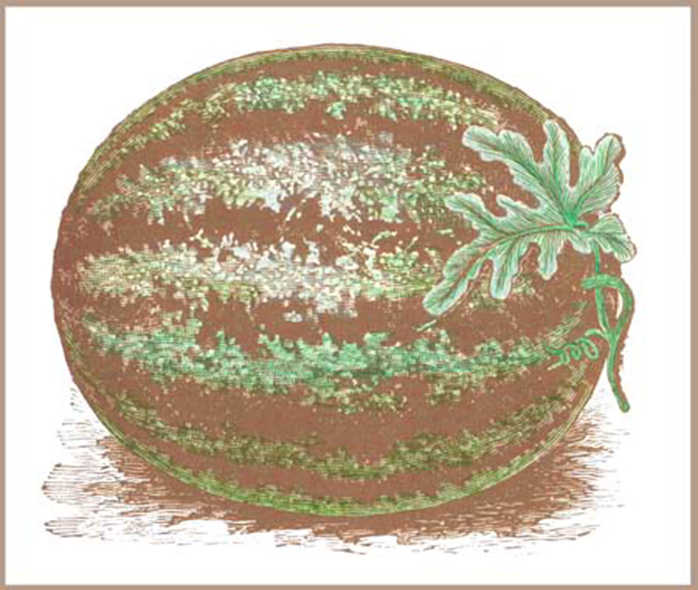
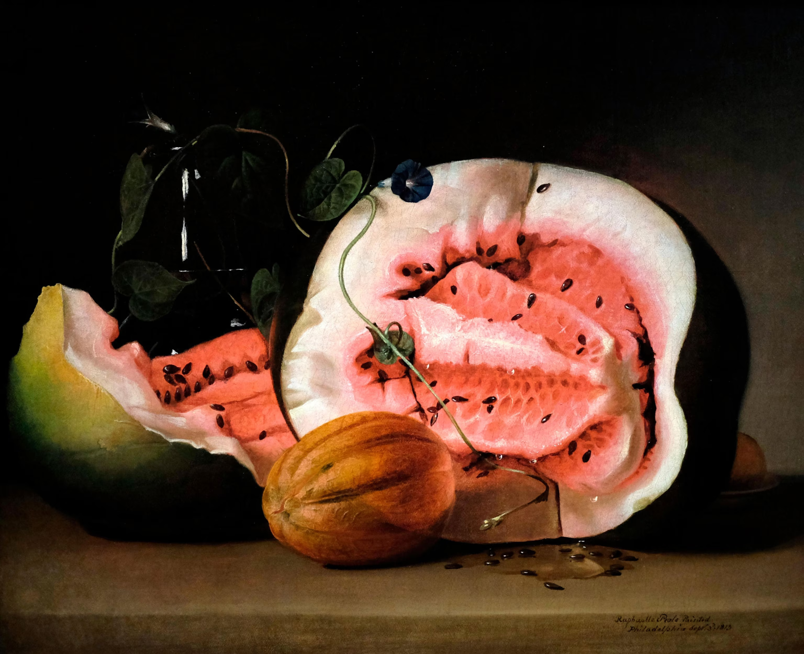
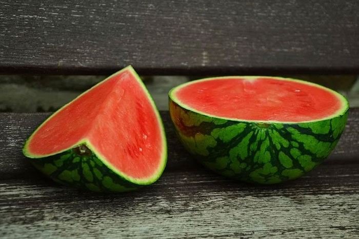

Watermelon History!!!
Throughout history, watermelons have been changed in many ways! Below I will list the 3 main eras of watermelons and how they were changed.
1. The Ancient "Botanical Canteen" Era (c. 3000 B.C. – c. 2000 B.C.)

During this era, watermelons were first cultivated and consumed in ancient civilizations.
2. The Mediterranean Cultivation & Spread Era (c. 2000 B.C. – Early 20th Century)

During this era, watermelons were cultivated and spread throughout the Mediterranean region. Culture, technique, and development in the information of watermelons spread across the region.
3. The Modern Seedless Era (Late 20th Century – Present)

During this era, watermelons have been developed to be seedless and more palatable for consumers.
Go back to the main page!